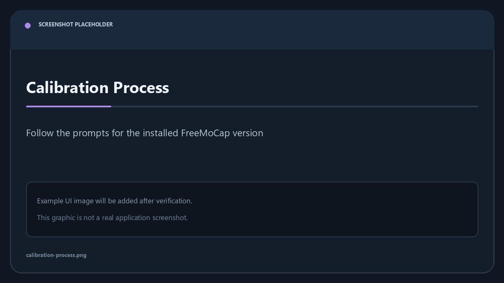

Calibration
Prepare a ChArUco board and record calibration footage for supported multi-camera or ground-plane workflows.
Not every capture needs calibration. FreeMoCap's single-camera guide describes a single-camera recording as a good first test without calibration. Follow the workflow for your number of cameras and intended coordinate frame.
Prepare the ChArUco board
- Use the exact ChArUco board pattern specified in FreeMoCap's current documentation or shown by your installed version.
- Print at the required scale. Disable “fit to page” or auto-scaling when exact dimensions matter.
- Mount the print flat to rigid backing and avoid bends, glare, damage, or occlusion.
- Enter the board layout and dimensions in FreeMoCap so they match the physical print.
A 7 × 5 layout with 58 mm squares is an example seen in one setup; it is not a universal FreeMoCap value. Use the board and dimensions configured for your session.

Record calibration footage
- Position and secure cameras for the intended capture area. Their views should overlap if the chosen workflow requires multi-camera reconstruction.
- Use FreeMoCap's calibration recording workflow and follow its current prompts for camera count and recording duration.
- Keep the whole board visible and sharp. Move and tilt it through different positions and orientations in the observed area as directed by the app.
- Keep cameras stationary after calibration. Record under conditions similar to the motion capture session.
- Review the clip before processing to check that the board is detectable in each required view.
Specific duration, board-motion instructions, calibration button labels, and available paths vary by release. Follow the current FreeMoCap documentation rather than assuming a fixed 10–30 second recording or a particular screen.

Run calibration
Select the calibration recording in the workflow available in your installation, enter the matching board settings, and run the calibration step. Wait for a success status or review the full error. A label such as Calibrate may differ by version.
For multi-camera 3D reconstruction, use calibration that matches the cameras and their positions. Moving a camera after calibration may invalidate the result.
Ground-plane alignment
Some FreeMoCap workflows support using a ChArUco board as a ground-plane reference. The official guide for that workflow describes a special initial recording period: the board is flat on the floor, stationary, and visible to the cameras. The exact checkbox and processing step differ by release.
Do not assume calibration always improves body scale or tracking. It helps establish camera geometry or coordinate orientation when supported and configured correctly; capture quality, camera setup, and the processing method still matter.
Next step
After calibration succeeds, see how to record iPhone motion footage, then import and process your session.